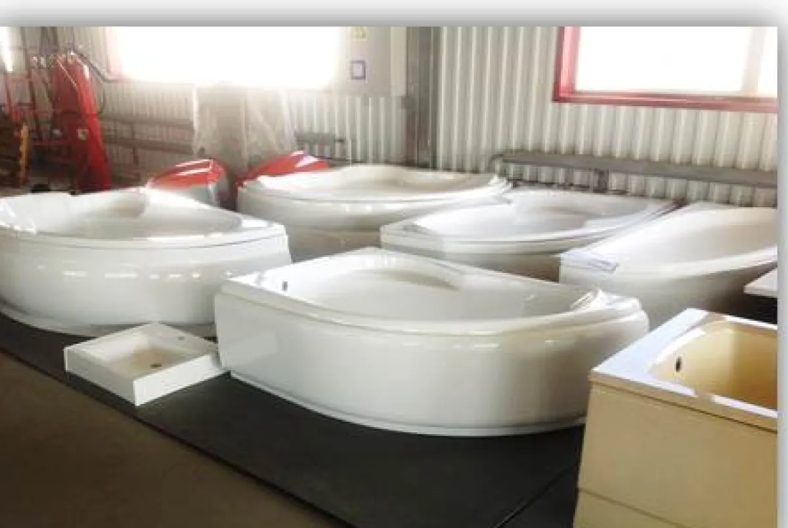

Главная / Продукция
Шесть направлений. Внутри каждого — номенклатура и примеры. Если вашей задачи в списке нет, это не значит, что мы её не сделаем: почти всё здесь начиналось с отдельного заказа.
Самое крупное наше направление. Кабины, обтекатели, маски, интерьеры и пульты управления для подвижного рельсового состава — для отечественных и зарубежных предприятий.

Сиденья и отделочные элементы из стеклопластика: лёгкие, прочные, не боятся влаги и чистящих средств, держат форму десятилетиями.

Для химической и нефтегазовой промышленности. Стеклопластик на полиэфирных и винилэфирных смолах не корродирует и не гниёт, служит дольше металла и весит заметно меньше.

Композиты называют строительными материалами XXI века: прочность, низкая теплопроводность, стойкость к агрессивным средам и перепадам температур, био-, влаго- и атмосферостойкость.

В 2024 году в НПП «Полёт» организован отдельный цех по производству БПЛА из углепластика — полный цикл от раскроя материала до испытаний готового аппарата.

Отдельная услуга для тех, кто производит сам: сделаем форму под ваше изделие. Разработка в 3D, изготовление на станках ЧПУ, оснастка из стеклопластика и металла.


Опишите задачу — подберём материал и метод формования, посчитаем оснастку и сроки.